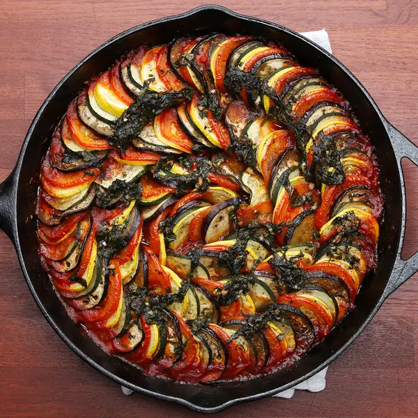

Ratatouille

Description
This delicious vegetarian dish is a perfect summer recipe. With fresh veggies, you can create this dish as it appears in the movie Ratatouille, with layering of the vegetables in a spiral.
The vegetables truly shine. Serve hot or cold. Try it out!
Ingredients
- Veggies
- 2 eggplants
- 6 roma tomates
- 2 yellow squashes
- 2 zucchinis
- Sauce
- 2 tablespoons olive oil
- 1 onion, diced
- 4 cloves garlic, minced
- 1 red bell pepper, diced
- 1 yellow bell pepper, diced
- salt, to taste
- pepper, to taste
- 28 oz. can of crushed tomatoes
- 2 tablespoons chopped fresh basil
- Herb Seasoning
- 2 tablespoons chopped fresh basil
- 1 teaspoon garlic, minced
- 2 tablespoons chopped fresh parsley
- 2 teaspoons fresh thyme
- salt, to taste
- pepper, to taste
- 4 tablespoons olive oil
Steps